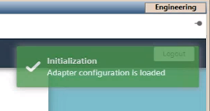
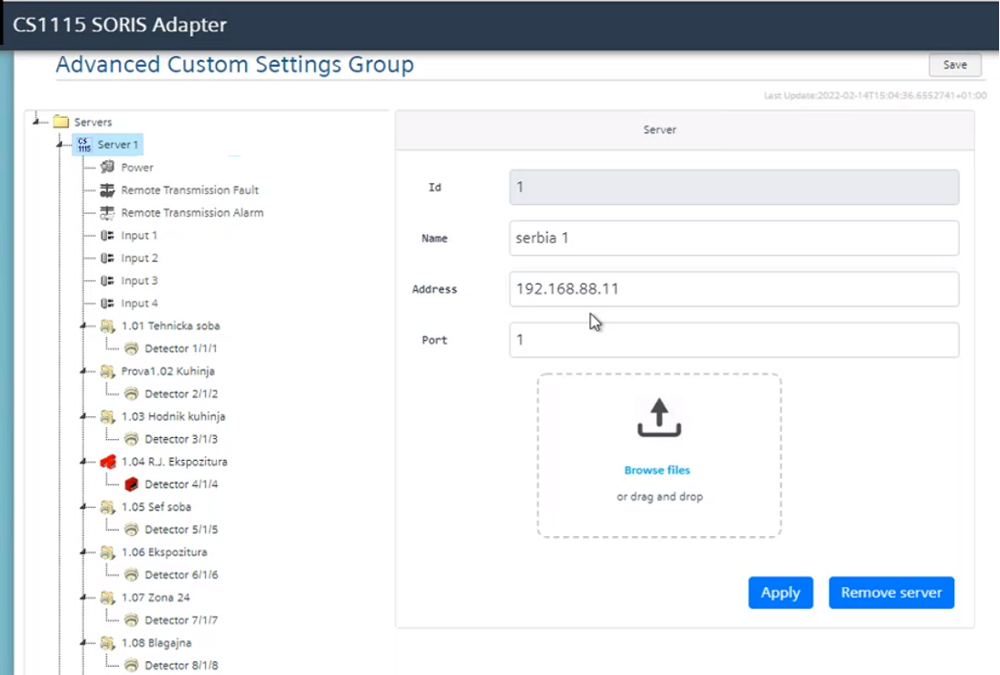

Configure the Adapter Connections
Each fire panel is connected to the adapter via a RS232/LAN converter (for example, the PLANET Technology ICS-110 Serial Device Server).
In the tool, in the Advanced Custom Settings Group page, this is represented by a Server node under the main Servers node.
You need to create a server and import the CSV configuration files exported by the fire panel tool.
- The RS232/LAN converter is installed and configured to communicate via serial line with the fire panel, and via LAN with the adapter.
- The CSV configuration files are available locally or over the network.
- To create a new server, select the Servers node and then select Add.
- The Add Server dialog box displays.
- Configure Name, IP Address and Port to access the converter.
- Select Apply.
- The new server displays under the Servers node.
- On the top right of the page, select Save.
- A green pop-up displays to confirm that the new adapter configuration is loaded.

- To modify the server parameters, in the list, select the server node, change the parameters as necessary and select Apply and then Save.
- From the server node, select Browse files and import the fire panel configuration (a CSV file).
Alternatively, you drag the CSV file on the command frame. - The fire objects are imported and display under the server node.
- Select Apply.
- Repeat the steps above to configure more servers and import the configuration of the connected fire panels, as necessary.
- Select Save.
